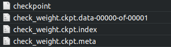

Deep Learning has gained intense attention in recent times. As the field expands, more and more research is done to expand its horizon. But, Deep Learning algorithms are notorious for requiring large amounts of data to perform well..
However, advances in technology have caused a rise in privacy concerns with companies using unethical means to collect data for their algorithms. This leads to people not willing to share data for improvisation.
Also, researchers and organisations are not able to share data. Crowdsourcing of data becomes difficult and leads to increased costs.
Federated Learning aims to solve the growing privacy concerns and allows application of crowdsourcing techniques to collect data.
The model on the user devices are trained locally on the user data (On-Device).
The updated weights of the models from the user devices are sent to the server where they are averaged before being stored.
These averaged weights are then used to update the global model which is pushed to the user devices.
Implementing Federated Learning in Android
This tutorial will guide you through the process of implementing Federated Learning with Android Devices as the client. The tutorial will be divided into 5 parts:
To run inference and training on Android, we'll need the model's metagraph and optionally, a checkpoint file.
For this tutorial, we'll use a simple Linear Regressor:
Let's generate the graph for the model:
#Python 3
1. import tensorflow as tf
2. x = tf.placeholder(tf.float32, name='input')
3. y_ = tf.placeholder(tf.float32, name='target')
4. W = tf.Variable(5., name='W')
5. b = tf.Variable(3., name='b')
6. y = x * W + b
7. y = tf.identity(y, name='output')
8. loss = tf.reduce_mean(tf.square(y - y_))
9. optimizer = tf.train.GradientDescentOptimizer(learning_rate=0.01)
10. train_op = optimizer.minimize(loss, name='train')
11. init = tf.global_variables_initializer()
# Creating a tf.train.Saver adds operations to the graph to save and
# restore variables from checkpoints.
12. saver_def = tf.train.Saver().as_saver_def
13. with open('graph.pb', 'wb') as f:
14. f.write(tf.get_default_graph().as_graph_def())
In line 14, tf.get_default_graph().as_graph_def() returns the Graphdef for the graph.
To generate the checkpoint files, use tf.train.Saver():
saver = tf.train.Saver()
//Training
saver.save(sess, your_path + "/checkpoint_name.ckpt")

B. Inference and Training on Android
1. We use TensorFlow's Java API to enable on - device training and inference. First, import the TensorFlow Package for Inference and Java API in your Android application by adding the following in your app’s build.gradle:
dependencies {
.
.
.
implementation 'org.tensorflow:tensorflow-android:1.13.1'
}
//Replace 1.13.1 with the latest version of the package
2. Then, import the graph in the application. To do this:
Create a variable of class org.tensorflow.Graph:
Graph graph = new Graph();
Place the .pb file generated before in the assets folder and import it as a byte[] array. Let the array's name be graphdef.
Now, load the graph from the graphdef:
graph.importGraphDef(graphdef);
3. To load the checkpoint, place the checkpoint files in the device and create a Tensor to the path of the checkpoint prefix:
checkpointPrefix = org.tensorflow.Tensors.create(“Path to checkpoint.ckpt”);
4. Now, load the checkpoint by running the restore checkpoint op in the graph:
sess.runner().feed("save/Const", checkpointPrefix).addTarget("save/restore_all").run();
5. Alternatively, initialize the graph by calling the init op:
sess.runner().addTarget("init").run();
First, create an input tensor:
Tensor x_train = Tensor.create(features);
Then perform inference by:
Tensor op_tensor = sess.runner().feed("input",input).fetch("output").run().get(0).expect(Float.class);
Copy this output to a float array using:
op_tensor.copyTo(output);
First, create the tensors for the input and the labels:
Tensor x_train = Tensor.create(features); Tensor y_train = Tensor.create(label);
Then, use the ‘train_op’ graph operation defined in the graph to train the graph:
sess.runner().feed("input", x_train).feed("target", y_train).addTarget("train_op").run();
Extract the weights of the model by:
ArrayList <Tensor<?>> w1 = (ArrayList <Tensor<?>>) sess.runner().fetch("W").run();
ArrayList <Tensor<?>> b1 = (ArrayList <Tensor<?>>) sess.runner().fetch("b").run();
Now, save these weights to send them to the server
To enable Federated Averaging, we'll need a server which can receive the weights. We host a server on Heroku and use Python for server functions.
We built the following function to upload weights to the server:
@app.route("/upload", methods = ['POST'])
def upload():
if flask.request.method == "POST":
print("Uploading File")
if flask.request.files["file"]:
weights = flask.request.files["file"].read()
weights_stream = io.BytesIO(weights)
bucket = storage.bucket()
#Uploading Files to Firebase
print("Saving at Server")
with open("delta.bin", "wb") as f:
f.write(weights_stream.read())
print("Starting upload to Firebase")
with open("delta.bin", "rb") as upload:
byte_w = upload.read()
#Preprocessing data before upload. File to be sent to Firebase is named "Weights.bin"
with open("Weights.bin", "wb") as f:
pickle.dump(weights, f)
with open("Weights.bin", "rb") as f:
blob = bucket.blob('weight1')
blob.upload_from_file(f)
print("File Successfully Uploaded to Firebase")
return "File Uploaded\n"
else:
print("File not found")
The following function uploads weights from the Android Application to the server:
String lineEnd = "\r\n";
String twoHyphens = "--";
String boundary = "*****";
private void uploadWeight(HttpURLConnection conn) {
try {
conn.setRequestMethod("POST");
conn.setRequestProperty("Connection", "Keep-Alive");
conn.setRequestProperty("ENCTYPE",
"multipart/form-data");
conn.setRequestProperty("Content-Type",
"multipart/form-data;boundary=" + boundary);
conn.setRequestProperty("file", "weights");
DataOutputStream dos = new DataOutputStream(conn.getOutputStream());
dos.writeBytes(twoHyphens + boundary + lineEnd);
dos.writeBytes("Content-Disposition: form-data; name=\"file\";filename=\"" + "weights.bin" + "\"" + lineEnd);
dos.writeBytes(lineEnd);
//Write File
dos.write(readArrayFromDevice());
dos.writeBytes(lineEnd);
dos.writeBytes(twoHyphens + boundary + twoHyphens + lineEnd);
int serverResponseCode = conn.getResponseCode();
serverResponseMessage = conn.getResponseMessage();
Log.i("Response Message: ", serverResponseMessage);
Log.i("Response Code: ", String.valueOf(serverResponseCode));
dos.flush();
dos.close();
} catch (ProtocolException e) {
e.printStackTrace();
} catch (IOException e) {
e.printStackTrace();
} finally {
conn.disconnect();
}
}
where readArrayFromDevice() reads the weights stored on the device
Now, let's average the weights. To get started, take out the weights (W, b) from the uploaded weights.
Let the weights be (W1, W2, W3, ..., Wn) and (b1, b2, b3, ..., bn).
Then, the new averaged weights are:
Wavg = (W1 + W2 + W3 + ... + Wn) / n
and
bavg = (b1 + b2 + b3 + ... + bn) / n
Put these in a list
w_ls = [Wavg, bavg]
Now, recreate the model on the server:
model = tf.keras.models.Sequential([tf.keras.layers.Dense(1, input_shape=(features_shape, ))
model.compile(optimizer=tf.keras.optimizers.SGD(lr=0.01), loss=tf.keras.losses.mean_squared_error)
Set the list of weights as the model's weights and generate the checkpoint file for it:
model.set_weights(w_ls) saver = tf.train.Saver() sess = tf.keras.backend.get_session() save_path = saver.save(sess, "model.ckpt")
Send these files to the Android application and store them in the folder which has the checkpoint prefix. These weights will be loaded when the application runs.